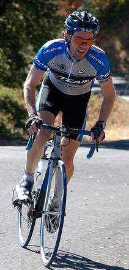

|
2007 Low-Key Hillclimbs Week 1 Results: Montebello 29 Sep 2007 |
|  |
| Chris Phipps sprints to the top of Montebello Road (photo by John Gale) |
Perfect weather greeted the 95 riders as they entered the bottom slopes of Montebello today. It was a strong turn-out, well over double the 38 who were here for the first climb of the 2006 series.
Leading the way to the top of the climb was Bill Bushnell, establishing a new scoring category for the low-key series with his hybrid electric recumbent. Arriving within two minutes of Bill was Z-team's Chris Phipps. Chris had won the 2007 San Bruno Hillclimb, the 2007 Ross' Hillclimb, and finished a close second place to Slipstream pro Lucas Euser in the Mt Tam Hillclimb two weeks ago. Chris' time of 0:00 shed 37 seconds from Tracy's winning time of last year. Following Chris were Tim Clark and Scott Frake, each breaking 28 minutes.
We had an excellent turnout of women this year, with Janet Martinez leading home a crowd of 12 with her time of 0:00. She was followed only 8 seconds later by Lucia Mokres. Third place went to Laura Stern, who won the women's category on this hill in 1995 with a blitzing time of 31:32.
Next up: King's Mountain Road, a local classic!
Thanks to help from Ron Brunner, Juliana Chen, Cara Coburn, and John Gale for making today's climb possible!median time = 24:09
pl # rider team category time mph fph score 1 244 Bill Bushnell TNT Hybrid 24:09 13.17 4820 100.00
median time = 35:48
pl # rider team category time mph fph score 1 200 Chris Phipps Z 2 26:05 12.19 4463 137.25 2 210 Tim Clark Red Dragon 35+ 27:02 11.76 4306 132.43 3 43 Scott Frake Webcor/Alto Velo Bald 27:54 11.40 4172 128.32 4 217 Thomas Novikoff Cambio 2 28:17 11.24 4115 126.58 5 248 Michael Grundmann UCSB 4 28:21 11.22 4106 126.28 6 224 Eric Balfus 2 28:21 11.22 4106 126.28 7 61 Jens Heycke Me 45+ 28:21 11.22 4106 126.28 8 215 Jon Ornstil Zoom 45+ 28:40 11.09 4060 124.88 9 243 John Davern 35+ 28:50 11.03 4037 124.16 10 245 Aaron Peterson Webcor/Alto Velo 3 29:33 10.76 3939 121.15 11 213 Tom Gardin 35+ 29:33 10.76 3939 121.15 12 45 Rupert Brauch Webcor/Alto Velo 3 29:59 10.61 3882 119.40 13 221 Jenson Lee Kahala La Grange 2 30:48 10.32 3779 116.23 14 242 Mark Johnson Webcor/Alto Velo 3 30:58 10.27 3759 115.61 15 97 Greg McQuaid Western Wheelers 35+ 31:15 10.18 3725 114.56 16 54 Justin Lucke Google Vegan 31:21 10.14 3713 114.19 17 142 Rich Hill LGBRC 40+ 31:32 10.08 3691 113.53 18 16 Peter Mehlitz Tired 31:36 10.06 3684 113.29 19 282 Ammon Skidmore Roaring Mouse 30+ 31:50 9.99 3657 112.46 20 239 Joerg Heilig Google 35+ 31:54 9.97 3649 112.23 21 116 Shance Ordell Western Wheelers 35+ 32:13 9.87 3613 111.12 22 207 Steve Paterson 45+ 32:32 9.77 3578 110.04 23 67 Martin Hyland Western Wheelers 50+ 32:59 9.64 3529 108.54 24 18 Jeff Loufit 50+ 33:03 9.62 3522 108.32 25 267 Crist Clark Webcor/Alto Velo 35+ 33:13 9.57 3504 107.78 26 65 Martin Voogel Webcor/Alto Velo 35+ 33:13 9.57 3504 107.78 27 20 James Porter Western Wheelers Out Of Shape Dads 33:13 9.57 3504 107.78 28 122 Michael Gonia Republic of Anaerobia 40+ 33:16 9.56 3499 107.62 29 241 Oliver Chan Voler 4 33:21 9.54 3490 107.35 30 255 John Franklin Old School 35+ 33:22 9.53 3489 107.29 31 4 Fred E. Stamm Pen Velo/Kondra 55+ 33:35 9.47 3466 106.60 32 6 Greg Dougald AV: Old Guys Finish 45+ 33:53 9.39 3435 105.66 33 222 Mike Salamen 50+ 34:38 9.18 3361 103.37 34 264 Luke Burton LGBRC 5 34:53 9.12 3337 102.63 35 237 Bill Preucel Friends of Janet 45+ 35:03 9.07 3321 102.14 36 204 Scott Khirck Wild Things Junior 35:05 9.06 3318 102.04 37 250 Ian Sowden 35:17 9.01 3299 101.46 38 115 John Murphy CalTrain 35+ 35:25 8.98 3287 101.08 39 140 Gary Griffin Team Santa Cruz 55+ 35:34 8.94 3273 100.66 40 206 Mark La Forge 45+ 35:42 8.91 3261 100.28 41 238 Michael Kim 45+ 35:48 8.88 3251 100.00 42 9 Ken Straub Team Bikeaholics Older Than You 36:02 8.83 3230 99.35 43 233 Rand Hill Apple 35+ 36:04 8.82 3227 99.26 44 273 Calvin Do Skinny slow guys 35+ 36:11 8.79 3217 98.94 45 218 Mike Peltier 40+ 36:48 8.64 3163 97.28 46 201 Vinay Ravuri Georgia Tech Beginner 36:51 8.63 3159 97.15 47 236 Paul Melville Doogie 55+ 37:15 8.54 3125 96.11 48 205 Pete Petruski Western Wheelers Beyond 37:36 8.46 3096 95.21 49 212 Pete Jollymour 6 37:43 8.43 3086 94.92 50 234 Pete Christiansen 40+ 37:44 8.43 3085 94.88 51 229 Michael Czepiel Apple 20-24 37:55 8.39 3070 94.42 52 251 Paul Forti 30+ 38:01 8.36 3062 94.17 53 227 Brian Becker 2 38:48 8.20 3000 92.27 54 232 Matt Rodnick Recreational 38:56 8.17 2990 91.95 55 149 Steve Sprang Apple 30+ 38:56 8.17 2990 91.95 56 276 Genti Cuni Climbing Turtles 38:58 8.16 2987 91.87 57 208 Ryan Knotts San Jose Bike Club 5 39:05 8.14 2978 91.60 58 219 Sean Broeder Silicon Valley Triathlon Club 35+ 39:06 8.13 2977 91.56 59 34 Stephen Fong Blubber Busters 5 39:09 8.12 2973 91.44 60 209 Anthony Tomlinson 39:09 8.12 2973 91.44 61 226 Dimitri Proano Apple 35+ 39:31 8.05 2946 90.59 62 211 Eric Melville Apple Cargo 39:56 7.96 2915 89.65 63 225 Bogdan Florea 35+ 40:05 7.93 2904 89.31 64 203 David Walker ZZZZZZ 45+ 40:21 7.88 2885 88.72 65 77 Jorge Chang Blubber Busters Infinity 40:40 7.82 2862 88.03 66 166 Todd Manley San Jose Bike Club 6'9" 40:41 7.82 2861 88.00 67 261 Jeffrey Treat Brothers Treat 41:24 7.68 2812 86.47 68 216 Guy Coté 35+ 41:25 7.68 2810 86.44 69 94 Todd Benjamin Apple 40+ 41:29 7.67 2806 86.30 70 228 Teodor Doru Cuturela 30+ 42:02 7.57 2769 85.17 71 49 Adam Tow Blubber Busters Infinity 42:45 7.44 2723 83.74 72 119 J.L. de Jong Menso's Dad 45+ 42:59 7.40 2708 83.29 73 89 JT Conklin Identity Engines 35+ 43:34 7.30 2672 82.17 74 258 Sean Treat Brothers Treat 30+ 43:49 7.26 2657 81.70 75 231 Murali Krishnan Commuter 35+ 44:18 7.18 2628 80.81 76 103 Toby Booth Webcor/Alto Velo 30+ 44:37 7.13 2609 80.24 77 223 Chris Comuto 30+ 46:30 6.84 2503 76.99 78 202 Brian Gothberg Wilcox Junior 50:28 6.30 2306 70.94 79 41 Chris Boardman The Cutters 5 50:38 6.28 2299 70.70 80 10 Dick Robinson TNT 59+ 52:12 6.09 2230 68.58 81 235 Paul Nixon Apple 30+ 52:23 6.07 2222 68.34
median time = 43:35
pl # rider team category time mph fph score 1 240 Janet Martinez Friends of Janet 40+ 35:20 9.00 3294 123.35 2 270 Lucia Mokres LGBRC 4 35:28 8.97 3282 122.89 3 230 Laura Stern TNT 45+ 36:03 8.82 3229 120.90 4 252 Irene Franklin Old School 30+ 36:31 8.71 3188 119.35 5 220 Aimee Baker Protech 35+ 41:01 7.75 2838 106.26 6 247 Daniela Becker Roaring Mouse 4 41:55 7.59 2777 103.98 7 214 Laura Dunn Friends of Janet 45:15 7.03 2572 96.32 8 95 Kelly Kasik Apple 45:29 6.99 2559 95.82 9 279 Nuria Bertran Climbing Turtles Beginner 49:25 6.44 2355 88.20 10 111 Pat Parseghian Google 50+ 55:32 5.73 2096 78.48 11 249 Judith Alderman Velogirls 35+ 56:20 5.64 2066 77.37 12 246 Amy Tam Velogirls 56:55 5.59 2045 76.57
pl team score scoring 1 Webcor/Alto Velo 368.87 (Scott Frake, Aaron Peterson, Rupert Brauch) 2 LGBRC 339.04 (Lucia Mokres, Rich Hill, Luke Burton) 3 Western Wheelers 334.22 (Greg McQuaid, Shance Ordell, Martin Hyland) 4 Friends of Janet 321.81 (Janet Martinez, Bill Preucel, Laura Dunn) 5 Google 304.90 (Justin Lucke, Joerg Heilig, Pat Parseghian) 6 Apple 289.50 (Rand Hill, Kelly Kasik, Michael Czepiel) 7 TNT 289.48 (Laura Stern, Bill Bushnell, Dick Robinson) 8 Blubber Busters 263.22 (Stephen Fong, Jorge Chang, Adam Tow) 9 Old School 226.64 (Irene Franklin, John Franklin) 10 Roaring Mouse 216.44 (Ammon Skidmore, Daniela Becker) 11 Climbing Turtles 180.07 (Genti Cuni, Nuria Bertran) 12 San Jose Bike Club 179.60 (Ryan Knotts, Todd Manley) 13 Brothers Treat 168.18 (Jeffrey Treat, Sean Treat) 14 Velogirls 153.94 (Judith Alderman, Amy Tam) 15 Z 137.25 (Chris Phipps) 16 Red Dragon 132.43 (Tim Clark) 17 Cambio 126.58 (Thomas Novikoff) 18 UCSB 126.28 (Michael Grundmann) 18 Me 126.28 (Jens Heycke) 20 Zoom 124.88 (Jon Ornstil) 21 Kahala La Grange 116.23 (Jenson Lee) 22 Republic of Anaerobia 107.62 (Michael Gonia) 23 Voler 107.35 (Oliver Chan) 24 Pen Velo/Kondra 106.60 (Fred E. Stamm) 25 Protech 106.26 (Aimee Baker) 26 AV: Old Guys Finish 105.66 (Greg Dougald) 27 Wild Things 102.04 (Scott Khirck) 28 CalTrain 101.08 (John Murphy) 29 Team Santa Cruz 100.66 (Gary Griffin) 30 Team Bikeaholics 99.35 (Ken Straub) 31 Skinny slow guys 98.94 (Calvin Do) 32 Georgia Tech 97.15 (Vinay Ravuri) 33 Doogie 96.11 (Paul Melville) 34 Silicon Valley Triathlon Club 91.56 (Sean Broeder) 35 ZZZZZZ 88.72 (David Walker) 36 Menso's Dad 83.29 (J.L. de Jong) 37 Identity Engines 82.17 (JT Conklin) 38 Commuter 80.81 (Murali Krishnan) 39 Wilcox 70.94 (Brian Gothberg) 40 The Cutters 70.70 (Chris Boardman)
{kind=link}